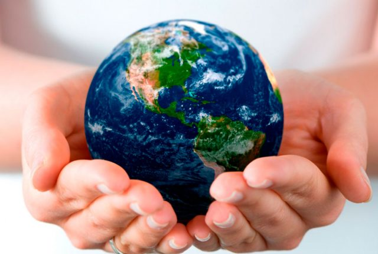
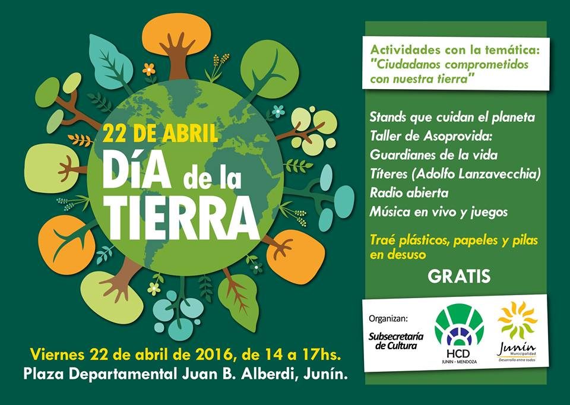
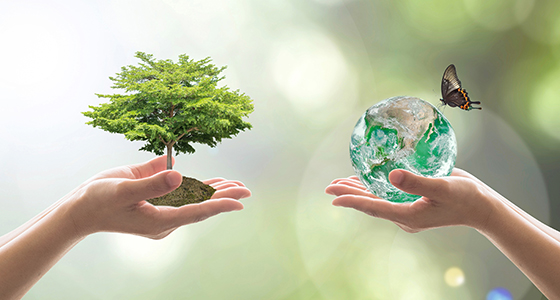
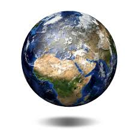
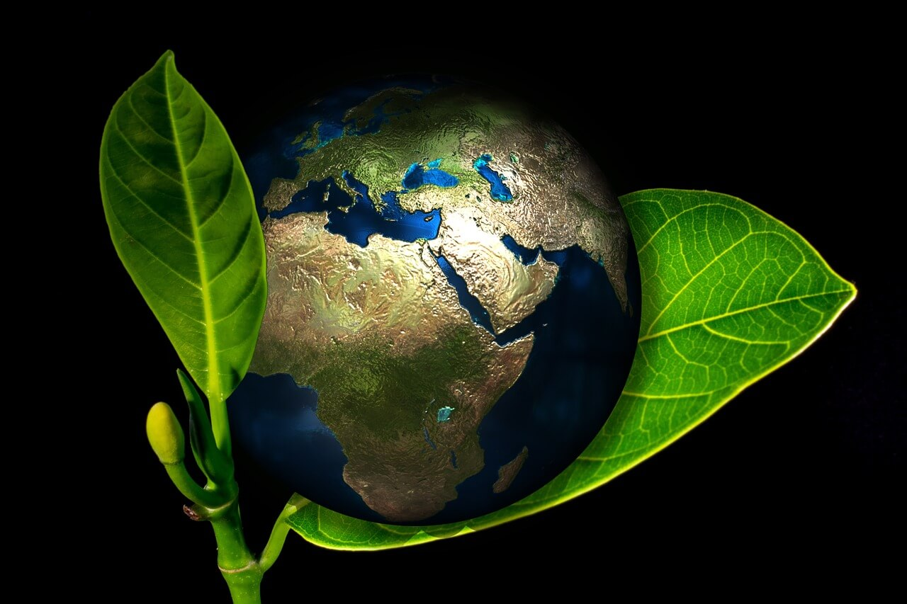

Dia Internacional de la Madre Tierra 22 de abril

- 
- 
- 
- 
- 

Realizado por:
Stephanie Sanchez Morales
4"F"
Especialidad
Programacion
Submodulo
Desarrolla Aplicaciones Moviles
Docente
Lic. Jose Antonio Gomez Hernandez
Programacion
Desarrolla Aplicaciones Moviles
Lic. Jose Antonio Gomez Hernandez
Celebramos el Dia Internacional de la Madre Tierra para recordar que el planeta y sus ecosistemas nos dan la vida y el sustento.Con este dia, asumimos, ademas, la responsabilidad colectiva, como nos recordaba la Declaracion de Rio de 1992, de fomentar esta armonia con la naturaleza y la Madre Tierra. Este dia nos brinda tambien la oportunidad de concienciar a todos los habitantes del plante acerca de los problemas que afectan a la Tierra y alas diferentes formas de vida que en el se desarrollan.
Un poco en respuesta a esto, en 1970 se instituyó en Estados Unidos el Día Tierra, un año después de que se registrara un devastador derrame petrolero en las costas de Santa Bárbara, California, con la consecuente protesta de activistas y en especial un senador de la época, Gaylord Nelson, que en compañía de ciudadanos y organizaciones realizó una intensa campaña en pro de la protección del medio ambiente. Casi 20 años después, esta efeméride alcanzó dimensiones mundiales cunado la Organización de las Naciones Unidas (ONU), en el marco de una reunión sostenida en Rio de Janeiro en 1992, instituyó con beneplácito de las más de 100 naciones participantes, el 22 de abril como Día Internacional de la Madre Tierra. Sin embargo, cabe hacer notar que estos sucesos, sin soslayar su valor institucional, en buena medida solo recogieron una amplia tradición común a casi todas las culturas del mundo, que encuentran en la Tierra el sustento original, la fuente primera de existencia, tanto en términos reales como simbólicos. A pesar de todos nuestros desarrollos tecnológicos, del grado de civilizaciones que, en otros sentidos, ha alcanzado la especie humana, la Tierra sigue siendo nuestro origen irrenunciable de subsistencia.
«Madre Tierra» es una expresión común utilizada para referirse al planeta Tierra en diversos países y regiones, lo que demuestra la interdependencia existente entre los seres humanos, las demás especies vivas y el planeta que todos habitamos. La Tierra y sus ecosistemas son nuestro hogar. Para alcanzar un justo equilibrio entre las necesidades económicas, sociales y ambientales de las generaciones presentes y futuras, es necesario promover la armonía con la naturaleza y el planeta. Celebramos el Día Internacional de la Madre Tierra para recordar que el planeta y sus ecosistemas nos dan la vida y el sustento. Con este día, asumimos, además, la responsabilidad colectiva, como nos recordaba la Declaración de Río de 1992, de fomentar esta armonía con la naturaleza y la Madre Tierra.
Este año, el organismo internacional celebra el octavo Diálogo sobre armonía con la naturaleza. El 23 de abril en la sede de la ONU de Nueva York se acogerá este encuentro con el que tratarán temas como la producción sostenible y los patrones de consumo en la armonía con la naturaleza. Mediante el diálogo quieren fomentar que los ciudadanos y las sociedades se conciencien sobre cómo se relacionan y cómo pueden relacionarse con el mundo natural. Al mismo tiempo, pretende mejorar los cimientos éticos de la relación entre la humanidad y la Tierra, en términos de desarrollo sostenible. En la Declaración de Río de 1992 ya marcaron que un objetivo que deberíamos seguir es el de fomentar esta armonía con la naturaleza y la Madre Tierra. Para alcanzar un justo equilibrio entre las necesidades económicas, sociales y ambientales de las generaciones presentes y futuras, es necesario promover dicha armonía. La Asamblea General ha reconocido ampliamente que el agotamiento mundial de los recursos naturales y la rápida degradación ambiental son el resultado de patrones insostenibles de consumo y producción que han tenido consecuencias adversas tanto para la Tierra como para la salud y el bienestar general de la humanidad. La comunidad científica tiene pruebas bien documentadas de que nuestro modo de vida actual, en particular nuestros patrones de consumo y producción, ha afectado gravemente la capacidad de carga de la Tierra.s
En concreto, tal y como anunciaron los responsables de estas ONG durante la presentación de Un programa por la Tierra. Demandas para una legislatura sostenible, lo que defienden con estas 17 propuestas es lograr que la «sostenibilidad del modelo económico, las políticas centradas en la justicia social y ambiental y las medidas para generar un nuevo modelo de producción y consumo, con generación de empleo ligado al cuidado y mejora ambiental» marquen el camino en la nueva etapa política. De forma resumida, estas son las 17 demandas: 1.ª Crear una Vicepresidencia de Sostenibilidad y Ministerio de Medio Ambiente. 2.ª Reforzar la Fiscalía Coordinadora de Medio Ambiente y Urbanismo y dotarla de más medios. 3.ª Reconocer y reforzar el papel de las organizaciones ambientales. 4.ª Establecer una Ley de Fiscalidad Ambiental que redistribuya la carga fiscal primando las buenas prácticas que promuevan el ahorro, la restauración ambiental y la creación de empleo ligado al medio ambiente. 5.ª Poner en marcha un plan ambicioso de mejora de la calidad del aire de ámbito estatal. 6.ª Prohibir de manera urgente el Bisfenol-A y otros disruptores endocrinos. 7.ª Prohibir el uso y abuso de animales con fines lúdicos o publicitarios a través de una Ley de Protección Animal. 8.ª Aprobar una Ley de Cambio Climático. 9.ª Realizar una auditoría energética de los costes reales del sistema como primer paso para poner en marcha una nueva política energética coherente que impulse el ahorro y la eficiencia energética, la producción descentralizada de energía renovable eliminando las subvenciones a los combustibles fósiles y acometiendo el cierre de las centrales nucleares tras 30 años de funcionamiento. 10.ª Aprobar una Ley de Movilidad Sostenible. 11.ª No construir más embalses ni trasvases. 12.ª Rediseñar una política agroalimentaria respetuosa con el medio ambiente. 13.ª No dar ni un paso atrás en la política de tolerancia cero contra la pesca ilegal —IUU—. 14.ª Apoyar a escala europea una política de Economía Circular ambiciosa que garantice una reducción del uso de recursos naturales por nuestra economía. 15.ª Dotar económicamente el Fondo para la Conservación de la Biodiversidad para garantizar el cumplimiento del Plan Estratégico para el Patrimonio Natural. 16.ª Derogar la modificación de la Ley de Costas para asegurar la conservación de los ecosistemas costeros amenazados. 17.ª Rechazar explícitamente el Tratado Transatlántico de Comercio e Inversiones (TTIP).